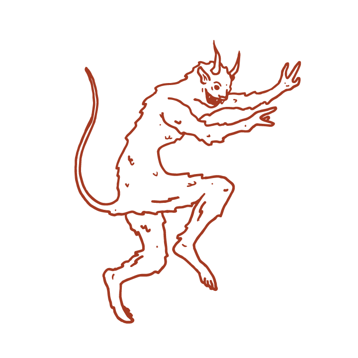

- Narrative -
Our major object of study with this project is the physical description of the Devil during witch trials in early modern Scotland. The Devil was a recurring character during the trial proceedings, and witches were commonly accused of sleeping with the Devil or making a demonic pact. The Survey of Scottish Witchcraft database from the University of Edinburgh (2003) contains records of hundreds of such trials dating between 1563 and 1736. We used these records as the foundation of our own analysis. Our use of primary sources included witch hunting codexes like King James VI’s Daemonologie (1580) and Discourse of the Damned Art of Witchcraft (1625). Records that reference the Devil’s appearance occur throughout the timeline of the database, but our primary focus is on four periods of “panic” when witch accusations spiked in 1597-1598, 1628-1631, 1649, and 1661-1662. Each of these spikes contain at least 100 accusations in a year. Dr. Julian Goodare, the director of the Survey, identified these spikes as the major witch hunts of this era. Although descriptions of the Devil still vary within these periods, we were able to observe major patterns among them using textual analysis tools like Voyant. For example, during the panic of 1597-1598, many records identify the Devil as appearing as some sort of animal, whereas in 1661-1662, “black” is the most common descriptor. We also compared our findings from the Survey to descriptions of the Devil from witch hunting texts of the time. This project seeks to display the patterns we observed using original graphics and analytical data visualizations, as well as pull from secondary sources to contextualize our findings and identify the possible causes behind them.
According to Brian Levack in his book The Witch-Hunt in Early Modern Europe, the leading narrative for the origins of witch hunting in Scotland is that fear of witches spread from the upper classes of society to the lower classes. Based on this theory, researchers have tended to focus their studies on powerful witch hunters who spread the fear of witchcraft to smaller Scottish communities. Our project seeks to expand on a relatively unexplored topic that was nonetheless central to any witch hunt—the Devil. During our interview with Dr. Goodare, he mentioned that one interesting research area yet to be deeply explored is the confessions that accused witches produce, whether under torture or of their own free will. These confessions vary widely; many align with the standard narrative of the Devil’s appearance and temptation, but others include unique details of magic, fairies, or animal spirits. Where do these various narratives originate? What can we learn from patterns within this variation?
Based on the lack of previous research into the Devil’s appearance, we intend our project to lay the groundwork for future scholars interested in this topic. The variations among descriptions from these trials point to larger cultural patterns in early modern Scottish society. Compared to the first major witch hunt in 1597-1598, the frequency of representations of the Devil as a man, especially with black skin or clothes, increased dramatically by the fourth major hunt in 1661-1662. At the same time, representations of spirit or animal Devils decreased between these eras. These changes may be the effect of the increasing prevalence of racism within early modern Scotland, as well as religious leaders’ attempts to root out the pagan beliefs that spirit and animal forms reflect. In this way, changes in the popular descriptions of the Devil reflect broader social movements outside the structure of the witch hunts themselves.
- Witch Hunts -
1597-1598
As a young boy in the late 1530s, Andro Man was in his mother’s house when a strange figure appeared to him. She had the look of a beautiful woman, but he knew she was really the Queen of Elven, the fairy queen. Over the years, the Queen returned to him many times, often accompanied by Christonday, an angelic man, and her entourage of other elven folk. The elves looked like shadows, Man recalled, but starker than real men. In the hills of the Scottish countryside, the elves would set up a feast—dancing, playing music, eating from tables laden with fairy food, making love to whoever they please. The Queen of Elven took Man as a lover, and he fathered several of her children. She taught him knowledge of fairy healing, and gave him the magic word Benedicte to call her to him whenever he wanted.
Late in his life, in 1597, Man saw the Queen and her entourage again. It was Ruidday, a holiday for the exaltation of the cross on September 14th. Out of the snowy countryside came a great stag—Christonday—and with him the elves and their Queen all riding on white horses. They came to their common meeting place in the hills, and again Man joined them to feast and make love. The same year, Man went to trial for his witchcraft with the elves. When he confessed his relationship with the Queen of Elven to the court, his story turned dark: in truth, Christonday was the Devil, his master, a fallen angel and God’s godson. Christonday “sways to the Queen of Elven,” Man confessed, but he is “the goodman, and has all power under God.”
1628-1631
In 1624, just before noon at Michaelmas, Alexander Hammiltoun met a man on the Hugstoun Hills, dressed all in black: the Devil. A penniless vagabond from Newcastle, Hammiltoun was enticed by the terms of the Devil’s pact. He would want for nothing, the man promised; not meat, nor clothing, nor money. In exchange, Hammiltoun entered into the Devil’s service. For the price of an animal—a cat or a dog—Hammiltoun received a wand that he could use to raise the Devil, and four silver shillings in his pocket. From then on, he attended witches meetings regularly, often held at noon on the hilltops, or in the valleys and forests around the country.
1649
In the late 1640s, Margrat NcWilliam met a young man who seemed too good to be true. He was handsome, well-favored, and above all, promised to help her out of her poverty if she helped him in return. There was only one catch—this man was the Devil. At first, she was reluctant to agree, and fought against his advances. He made his offer twice, and twice she refused. Suddenly he grabbed her leg, leaving a mark, and asked a third time for her service. In pain, she agreed to help him; as soon as she spoke the word, the Devil put his mouth to her leg to heal the sore.
Although he promised she would want for nothing, the Devil’s help came at a steep price. First, she gave him a gift of a chicken. Soon, however, he asked for something more precious: the life of her son. He gave her an elf-shot, an arrow from the elves that leaves invisible wounds. Unable to rescind her agreement, NcWilliam used the elf-shot on her son, who died of his wounds ten days later.
1661-1662
Jonet Morisone narrative